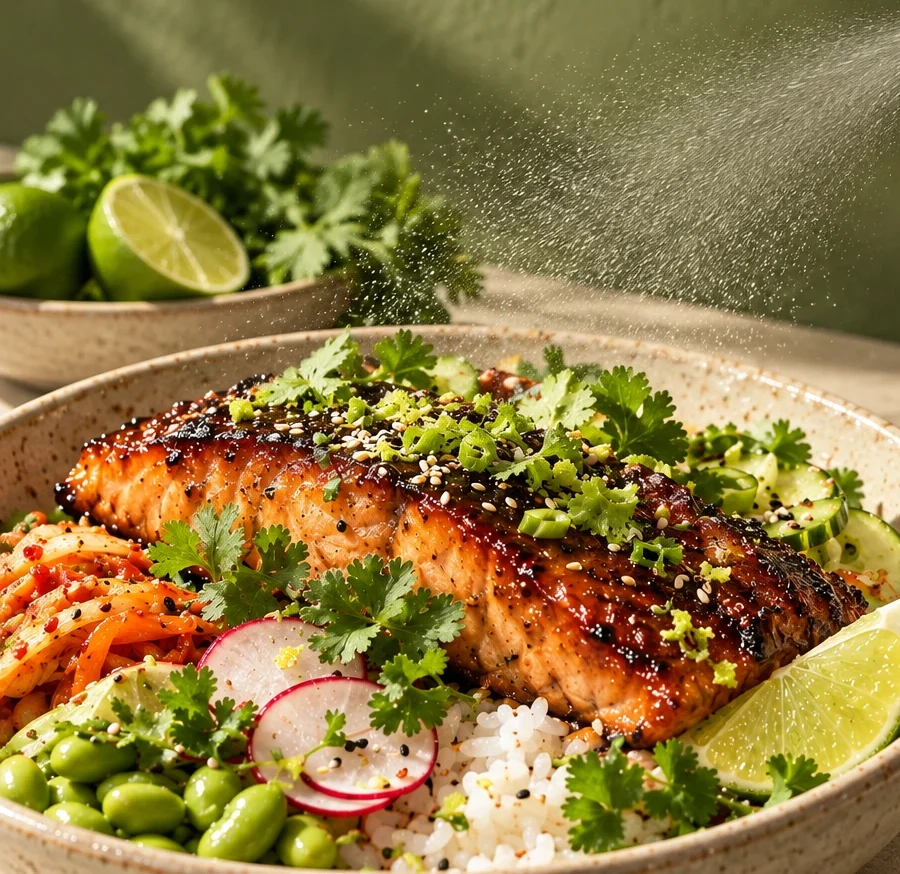

The CILLY story
고수는,
The last touch, right before the first bite.
고수는,
늘 모자랐다.

-
Three leaves
쌀국수에 “고수 많이요.” 돌아오는 건 세 잎. 옆자리가 빼 달라고 한 고수까지 내 그릇으로 옮겨도 늘 모자랐다.
-
The fade
고수 한 단을 사 오면 사흘이면 무른다. 막 자른 그 초록 향은 접시에 오르기도 전에 옅어진다.
-
香菜
중국에선 고수를 향채, 향 나는 채소라 부른다. 우리가 사랑한 건 처음부터 그 향이었다.
-
The bottle
그래서 향수처럼 담았다. 칼이 닿는 순간의 향을, 원하는 만큼, 먹기 직전 내 접시에.